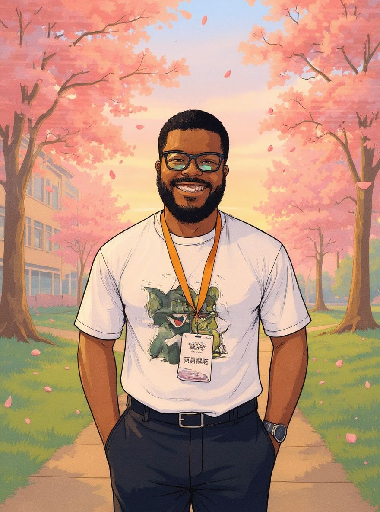

Hi. I’m Malick.
I am a Research Engineer working at the frontier of AI and Computational Neuroscience.
Currently at Nankai University, I am building the Universal Narrative Engine. My work involves decoding latent neural states from the Alice Dataset.
Beyond the lab, find me on the football pitch, at the billiards table, or playing ping pong. I believe research is fueled by a spicy plate of Gong Bao chicken in Tianjin or the comforting taste of West African staples from home.
Research & Projects
The Universal Narrative Engine
Nankai University | CurrentThesis: Manifold Alignment and Zero-Shot Decoding of Latent Neural States
Using Virtual Reality as an interface/simulator to visualize high-dimensional manifold alignment and interact with neural trajectories decoded from the Alice dataset.
Diagnosis Classification Study
MRC Unit The Gambia at LSHTMPostgraduate Research Visitor
Analyzed clinical and laboratory datasets across West Africa to develop predictive classification models for Bacterial Meningitis diagnosis, bridging public health data with machine learning.
Cortical Visual Processing
CMU Africa | Trend CAMINASummer School Research Participant (July 2024)
Modeled the differential processing of visual information by cortical inhibitory and excitatory neurons, focusing on the computational foundations of cortical circuitry.
Emerging Class Discovery in LLMs
IndabaX Gambia | 2025Research Participant
Investigated semantic co-occurrence patterns in large text corpora to improve representation learning and class discovery within Large Language Models (LLMs).
Education
Nankai University
Tianjin, China | 2024 — 2026Master of Science (M.Sc.) in Software Engineering
- Focus Machine Learning, Computer Vision, and Intelligent Systems
- Research Computational neuroscience, neural encoding and decoding, vision–language modeling, and brain–machine interfaces
- Thesis The Universal Narrative Engine: Manifold Alignment and Zero-Shot Decoding of Latent Neural States
University of The Gambia
The Gambia | 2021Bachelor of Science (B.Sc.) in Computer Science
Certifications
Computational Neuroscience Course
Neuromatch Academy
November 2025
Trend CAMINA Summer School
Carnegie Mellon University Africa
Project: Differential Processing of Visual Information by Cortical Inhibitory and Excitatory Neurons
July 2024
Software Engineering Certificate
ALX Africa
Oct 2022 — 2023
Skills & Competences
Research & Strategy
- • Neural data analysis & encoding/decoding
- • Computational modeling of brain activity
- • Multimodal representation analysis
- • Open source systems research
Personal Strengths
Leadership, Community building (AI Gambia Network), Project management, and Cross-functional team collaboration.
Software & Tools
Teaching
Teaching Assistant
University of The GambiaHuman-Computer Interaction & Intelligent Systems
Supported lectures and practical sessions, guiding students through hands-on projects in system design and intelligent computing. Facilitated the transition from theoretical concepts to functional programming tasks.
Conferences & Workshops
Deep Learning Indaba
Poster Presenter & Attendee
Kigali, Rwanda | 2025
OpenKylin Global Developer Conference
Community New Star Award Winner
Beijing, China | 2025
China Open Source Conference (COSC)
Participant & Researcher
Beijing, China | 2025
World Internet Conference
Global Elite Training Program
Wuzhen, China | 2024
Open Source Community Africa (OSCA) Summit
Chapter Lead Representative
Lagos, Nigeria | 2024
ETHIXPERT Conference on Research Ethics
UTG in collaboration with MRC Unit The Gambia at LSHTM
The Gambia
Industrial Experience
Software Engineer
University of The Gambia
- Designed and deployed digital platforms for academic management and research support, modernizing institutional data workflows.
- Collaborated on the university’s digital transformation strategy to improve institutional efficiency and transparency.
2023 — Present
Software Engineer
2M CORP
- Developed tailored health information systems for the Government of Niue, Kaduna State, and The Gambia.
- Implemented scalable, secure public data management platforms aligned with international public sector digital standards.
2022 — 2023
Junior Software Engineer Intern
University of The Gambia
Contributed to the development of internal university applications and data portals, supporting the early-stage digitization of student records.
2021 — 2022
Awards & Honors
MOFCOM Scholarship Award
Chinese Government Scholarship for Postgraduate Excellence at Nankai University.
China
3rd Place: Large Model Reasoning Engine
Inference Optimization Competition — Ranked 3rd out of 200+ global teams.
OpenKylin Community
3rd Place: Data Science for Health Ideathon Africa
Google Sponsored — Developed MKUNGA, an AI-driven Swahili antenatal triage system.
Pan-Africa
New Star of the Year Award
Recognized at the OpenKylin Global Developer Conference for community contributions.
Beijing
Poster Presenter Award
Deep Learning Indaba — Recognizing excellence in research presentation.
Kigali, Rwanda
Leadership
Founding Member & Coordinator
Artificial Intelligence Gambia Network
Coordinating AI learning programs and research-driven discussions to build the local ecosystem for data science and machine learning.
Chapter Lead
Open Source Community Africa (OSCA)
Guiding contributors on Git workflows and open-source participation at the Brusubi Chapter.
Gallery & Events

Indaba 2025

Tencent HQ

OpenKylin 3rd Place

Poster Session

DLI Rwanda

Agro Tech Keynote

COSCON Beijing

Global DevCon